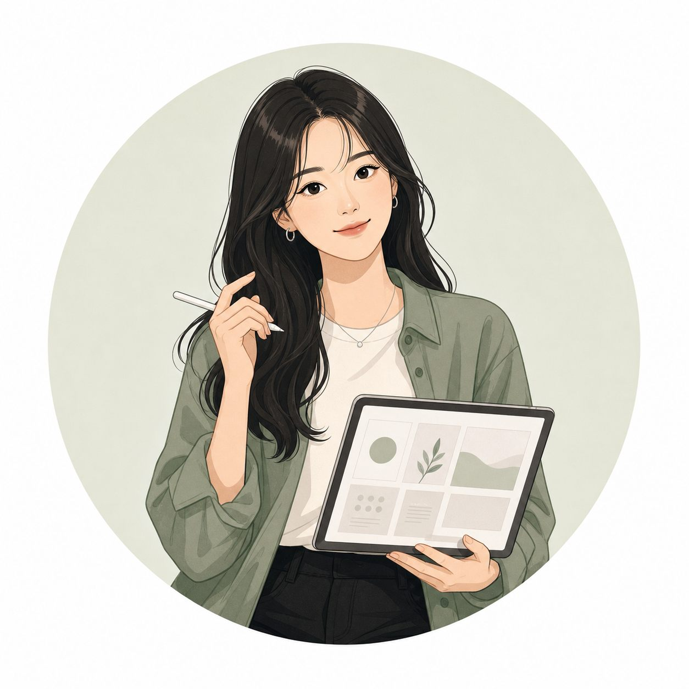
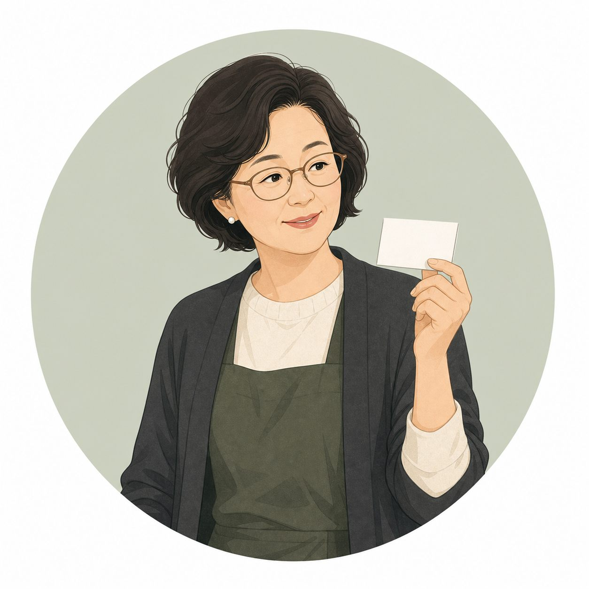

툴디 커뮤니티 VOC 기반
템플릿 경험 개선안
처음 제안은 인쇄 주문 전 오타·문구 검수였지만, VOC를 다시 보며 툴디의 핵심 상품이 템플릿 경험에 있다는 점에 집중했습니다.
그래서 이번 기획은 템플릿을 더 잘 찾고, 더 명확히 분류하고, 더 예측 가능하게 노출하는 방향으로 문제를 재정의했습니다.
이번 제안의 출발점
처음 안은 인쇄 검수였고,
VOC를 보며 템플릿 경험으로
문제를 다시 잡았습니다.
VOC 수집·정제
3개 게시판, 624건 수집, 546건 분석
LDA 기반 토픽 분석 결과
업로드·심사·태그·노출 기준 이슈 확인
문제 재정의
등록 기준, 분류 기준, 노출 기준, 주문 확인
개선안과 화면
구조 필터, 정렬, 오타·문구 검수
도입과 운영
MVP 범위와 출시 후 지표
수집 범위
툴디 커뮤니티 3개 게시판에서 공개 글을 수집했습니다.
정제 기준
분석 전에 공지, 운영자성 글, 빈 텍스트, 너무 짧거나 긴 글을 제외했습니다.
분석 원칙
토픽 모델링은 반복 이슈를 빠르게 묶기 위한 보조 도구로만 사용했습니다.
요소 업로드·반려·태그·카테고리 기준 불확실성
왜 반려됐는지, 어떤 카테고리로 올려야 하는지 모르겠다는 문의가 반복됨
139건템플릿·챌린지·제작 인정 기준 모호성
카테고리 1개 인정, 템플릿 종류 중복, 챌린지 기준 관련 문의
111건심사 상태·콘텐츠 성과·정산 확인 문제
심사 대기, 사용수와 판매수, 정산 반영 시점이 명확하지 않음
93건구독·포인트·등급 정책 문의
무료 구독, 포인트 결제, 브러쉬 등급과 유료 템플릿 수익 관련 문의
87건계정·크리에이터 운영 정책 문의
계정/메일 문제, 저작권, 심사 지연, 크리에이터 정책 관련 문의
116건분석 전 가정
처음 제출한 기획안은 명함·청첩장 인쇄 주문 전 오타·문구 검수에 초점을 두었습니다.
VOC로 다시 본 방향
반복 VOC는 크리에이터가 템플릿과 요소를 등록하고 심사받고 노출되는 과정의 불확실성에 더 많이 쏠려 있었습니다.

미리디: 감성 기준 필터가 전면에 보인다
귀여운, 감성적인, 전문적인 같은 감성어로 템플릿을 좁히게 되어 있습니다.

툴디: 검색창은 있지만 선택 기준은 덜 드러난다
템플릿이 핵심 상품으로 보이지만, 결과를 어떤 기준으로 좁힐지 화면에서 즉시 보이지 않습니다.
1. 등록 기준
크리에이터는 요소·템플릿을 어떤 형식과 카테고리로 올려야 하는지 헷갈립니다.
2. 분류 기준
사용자와 크리에이터 모두 템플릿이 어떤 기준으로 묶이는지 예측하기 어렵습니다.
3. 노출 기준
신규 콘텐츠가 어떻게 노출되고 인기 콘텐츠가 어떻게 고착되는지 기준이 필요합니다.
4. 확인 기준
명함·청첩장처럼 인쇄 후 수정이 어려운 상품은 주문 직전 문구 확인이 필요합니다.
왜 이 기능인가?
VOC에서 드러난 태그·카테고리·노출 기준의 혼란을 사용자 화면과 크리에이터 업로드 기준으로 함께 풀어냅니다.
필터 옵션은 4개만 둔다
역할
정렬은 탐색 편의 기능이면서 신규 크리에이터 콘텐츠의 초기 노출 기회와 연결됩니다.
주의점
정렬은 편리하지만 운영 정책 없이 붙이면 오히려 불신이 생길 수 있습니다.
무료 템플릿과 최신 디자인 검색.
프레젠테이션, 굿즈, 홍보물까지! tooldi의 다양한 무료 템플릿으로 디자인 고민을 끝내보세요.
왜 남겨야 하는가?
툴디가 템플릿 서비스라고 해도, 명함·청첩장 인쇄 주문 순간에는 사용자의 불안이 커집니다.
주문 직전 검수 화면
Before PaymentNVIDIA Nemotron-Personas-Korea
NVIDIA가 공개한 한국인 합성 페르소나 데이터셋입니다. 실제 개인 정보가 아니라 연령, 직업, 가족 환경, 관심사, 기술 친숙도 같은 속성을 가진 가상 인물 데이터로 구성되어 있습니다.
이 기획안에서는 실제 고객조사를 대체하는 근거가 아니라, VOC에서 나온 문제를 여러 사용자 맥락에 대입해보는 보조 시뮬레이션 자료로 사용했습니다.
왜 페르소나를 붙였나
VOC는 실제 불편을 찾는 단계이고, 페르소나는 개선안이 어떤 사용자에게 더 강하게 작동하는지 확인하는 단계입니다.
VOC와 겹치는 지점
조샛별
니즈신규 템플릿이 묻히지 않고, 어떤 태그가 노출에 유리한지 알고 싶다.
연결최신순 + 구조 태그를 업로드 기준과 연결한다.
A + B
김희정
니즈다운로드·SNS용 템플릿을 빠르게 찾고 싶다.
연결사진 중심, 글자 중심처럼 실제 구성 기준으로 좁힌다.
B이수경
니즈명함은 빨리 고르고 싶지만 연락처 오타는 불안하다.
연결인기순으로 고르고 주문 직전 연락처를 확인한다.
A + C천혜름
니즈날짜·장소·이름 실수는 되돌리기 어려워 최종 확인이 필요하다.
연결핵심 문구를 자동 추출하고 재확인한다.
C
최순둘
니즈복잡한 옵션은 부담스럽지만 주문 전 정보 확인은 필요하다.
연결쉬운 말의 필터와 문구 확인을 제공한다.
B + C명함·청첩장 주문 직전 체크리스트형 MVP로 시작합니다. 실수 비용이 가장 큰 영역에 우선 진입합니다.
프레젠테이션·명함·청첩장처럼 템플릿 수가 많은 카테고리에 먼저 적용합니다.
인기순·최신순을 붙이되, 인기순 기준 정의와 상위 고착화 방지 정책을 먼저 정비합니다.
구조 필터
- 필터 사용률
- 필터 적용 후 템플릿 클릭률
- 0건 결과 발생률
- 크리에이터 태그 정확도
정렬
- 정렬 토글 사용률
- 최신순 신규 템플릿 클릭률
- 인기순 상위 고착화 여부
- 검색 후 편집 진입률
오타·문구 검수
- 검수 완료율
- 검수 후 편집기 재진입률
- 주문 전환율 유지 여부
- 오타 관련 CS 비중